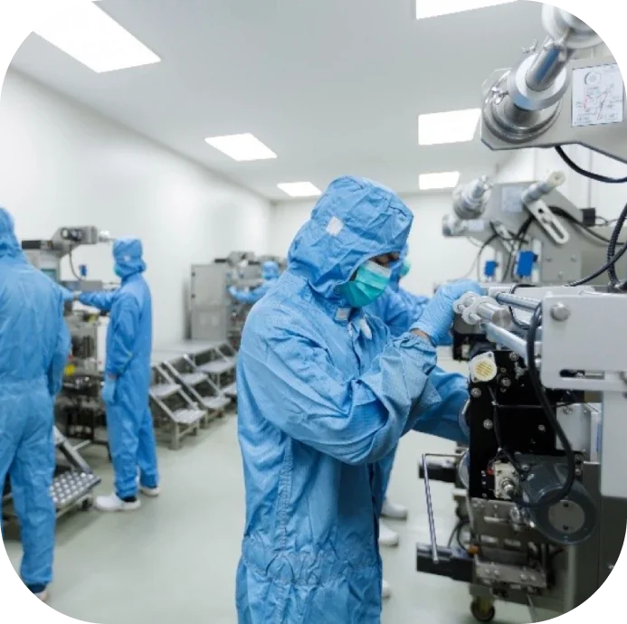
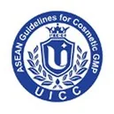
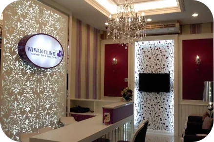
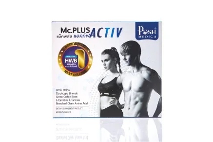
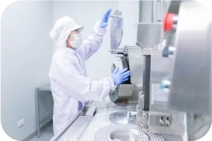
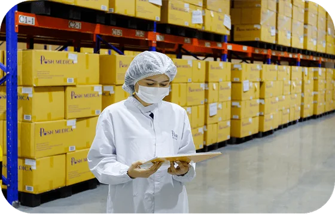

วิสัยทัศน์
ผู้นำด้านผลิตภัณฑ์ดูแลสุขภาพที่มีคุณภาพและราคาเข้าถึงได้ มีส่วนช่วยให้สุขภาพดีทั้งภายในและภายนอก
บริษัท พอช เมดิก้า ไลฟ์เทค จำกัด (มหาชน)
กว่า 15 ปี ที่ POSH ได้รับความไว้วางใจในฐานะผู้นำด้านสุขภาพและความงาม ด้วยผลิตภัณฑ์เสริมอาหารและเครื่องสำอางคุณภาพสูงที่ผ่านการรับรองตามมาตรฐานระดับสากล ทั้งในด้านคุณภาพและความปลอดภัย
เราขับเคลื่อนด้วยนวัตกรรมและงานวิจัยอย่างต่อเนื่อง เพื่อพัฒนาผลิตภัณฑ์ที่ตอบโจทย์ความต้องการที่เปลี่ยนแปลงอยู่เสมอ โดยทีมงานผู้เชี่ยวชาญที่มีความเชี่ยวชาญในอุตสาหกรรมเสริมอาหารและเครื่องสำอางสำหรับนำเสนอสินค้าที่ทันสมัยและล้ำหน้าอยู่เสมอ
ด้วยกลยุทธ์การตลาดที่คิดอย่างสร้างสรรค์ เราสื่อสารคุณค่าที่แท้จริงของผลิตภัณฑ์ พร้อมมอบประสบการณ์การบริการที่ยอดเยี่ยม เพื่อสร้างความประทับใจและความผูกพันในระยะยาวกับลูกค้า
อีกทั้ง POSH ยังให้ความสำคัญกับความยั่งยืน โดยดำเนินธุรกิจอย่างมีความรับผิดชอบต่อสังคมและสิ่งแวดล้อม
ด้วยหัวใจที่มุ่งมั่นในความเป็นเลิศ เราจึงยังคงเป็นแบรนด์ที่ผู้บริโภคเชื่อมั่นและไว้วางใจเสมอมา

พัฒนาผลิตภัณฑ์มาแล้ว
1,000+
ผลิตภัณฑ์
ประสบการณ์กว่า
15
ปี
ช่องทางจัดจำหน่าย
25,000+
จุดขายทั่วประเทศ
มียอดขายรวม
586+
ล้านบาท ในปี 2567
ผู้นำด้านผลิตภัณฑ์ดูแลสุขภาพที่มีคุณภาพและราคาเข้าถึงได้ มีส่วนช่วยให้สุขภาพดีทั้งภายในและภายนอก
เราทุ่มเทอย่างเต็มที่ในการใช้เทคโนโลยีการผลิตอันทันสมัย วัตถุดิบที่มีคุณภาพ และการวิจัยพัฒนาที่มีมาตรฐานสากลรองรับ เพื่อให้ได้ผลิตภัณฑ์ดูแลสุขภาพที่มีประสิทธิผลสูงสุดในราคาที่เข้าถึงได้






ก่อตั้ง Wiwan Aesthetic Clinic โดยทีมแพทย์ผิวหนังผู้เชี่ยวชาญ

ขยายฐานการผลิตไปยังพื้นที่อำเภอลำลูกกา จังหวัดปทุมธานี บนเนื้อที่กว่า 15,000 ตารางเมตร รองรับกำลังการผลิตเพิ่มขึ้น 20 เท่า

ก้าวสำคัญของ Posh Medica Lifetech สู่การเป็นบริษัทมหาชนอย่างเต็มภาคภูมิ สะท้อนความมุ่งมั่นในการรักษามาตรฐานระดับสูง พร้อมเดินหน้าอย่างมั่นคงสู่การเติบโตอย่างยั่งยืนในระดับสากล

อย่างเป็นทางการในฐานะบริษัทผลิตและจัดจำหน่ายครบวงจร ให้บริการทั้งแบรนด์ของบริษัทเองและลูกค้า OEM

ขยายฐานการผลิตไปยังพื้นที่อำเภอลำลูกกา จังหวัดปทุมธานี บนเนื้อที่กว่า 15,000 ตารางเมตร รองรับกำลังการผลิตเพิ่มขึ้น 20 เท่า
สู่การเป็นบริษัทมหาชนอย่างเต็มภาคภูมิ สะท้อนความมุ่งมั่นในการรักษามาตรฐานระดับสูง พร้อมเดินหน้าอย่างมั่นคงสู่การเติบโตอย่างยั่งยืนในระดับสากล
เรียน ผู้ถือหุ้นและผู้มีส่วนได้เสียทุกภาคส่วน
ในปี 2569 นี้ สถานการ์ณของโลกทั้งการเมือง และเศรษฐกิจ ของประเทศมหาอำนาจ ซึ่งมีผลกระทบกับเศรษฐกิจของประเทศไทยอย่างหลีกเลี่ยงไม่ได้ มีการพยากรณ์ว่าเศรษฐกิจไทยจะยังคงมีความเติบโตอย่างต่อเนื่อง แม้จะไม่สูงมากนัก อย่างไรก็ดี ยังมีแรงหนุนจากการมีเลือกตั้งสมาชิกรัฐสภาใหม่ทั่วประเทศ ซึ่งจะทำให้นโยบายในการบริหารประเทศ มีทิศทางที่แน่นอนขึ้น และภาคการท่องเที่ยว ยังคงไปได้ บริษัทได้ตระหนักถึงปัจจัยเหล่านี้ และทางผู้บริหารได้เตรียมความพร้อมในด้านต่างๆ เพื่อให้บรรลุถึงเป้าหมาย ที่วางไว้อย่างเต็มที่ และมุ่งมั่นให้เป็นไปตามเป้าหมายที่ได้วางไว้ต่อไป
ในนามของ บริษัท พอช เมดิก้า ไลฟ์เทค จำกัด (มหาชน) (“บริษัทฯ”) ผู้ผลิตและจัดจำหน่ายผลิตภัณฑ์เสริมอาหารและเครื่องสำอางครบวงจร ภายใต้โรงงานที่ได้รับการรับรองมาตรฐานสากล ขอแสดงความขอบคุณต่อลูกค้า คู่ค้า และพันธมิตรทางธุรกิจทุกท่านที่ให้ความไว้วางใจและสนับสนุนบริษัทของเราด้วยดีเสมอมา
บริษัทฯ มุ่งมั่นพัฒนาผลิตภัณฑ์ที่มีคุณภาพ ปลอดภัย และตอบโจทย์ความต้องการของผู้บริโภคในยุคปัจจุบัน ด้วยการนำนวัตกรรมและเทคโนโลยีสมัยใหม่มาปรับใช้ในกระบวนการผลิตทุกขั้นตอน พร้อมทั้งดำเนินธุรกิจด้วยความรับผิดชอบต่อสังคมและสิ่งแวดล้อม ภายใต้ปรัชญา “Toward Medical Excellence”
ในปีที่ผ่านมา บริษัทฯ ได้ขยายช่องทางการจัดจำหน่ายผลิตภัณฑ์ของเราให้ครอบคลุมทั้งร้านค้าทั่วประเทศและช่องทางออนไลน์ เพื่อให้ผู้บริโภคสามารถเข้าถึงผลิตภัณฑ์ของเราได้สะดวกยิ่งขึ้น เราเชื่อมั่นว่า การปรับตัวและพัฒนาตนเองอย่างต่อเนื่องจะช่วยให้บริษัทฯ เติบโตอย่างยั่งยืนในสภาวะเศรษฐกิจที่เปลี่ยนแปลง รวมถึงการสร้างพันธมิตรทางธุรกิจใหม่ๆ เพื่อเสริมความแข็งแกร่งของระบบโลจิสติกส์และการกระจายสินค้า ส่งผลให้เราสามารถตอบสนองความต้องการของลูกค้าได้รวดเร็วและมีประสิทธิภาพมากยิ่งขึ้น
บริษัทฯ ยังคงให้ความสำคัญกับการสร้างความสัมพันธ์อันดีต่อชุมชนและสังคม โดยสนับสนุนผู้ประกอบการรายย่อย รวมถึงส่งเสริมการจ้างงานในท้องถิ่น ผ่านการขยายกำลังการผลิตของโรงงานของเราอย่างต่อเนื่อง นอกจากนี้ บริษัทฯ ยังเดินหน้าพัฒนานวัตกรรมผลิตภัณฑ์ใหม่ๆ ที่สอดรับกับแนวโน้มสุขภาพและความงามในระดับสากล เพื่อตอบสนองความต้องการของผู้บริโภคที่เปลี่ยนแปลงอยู่เสมอ และมีแผนที่จะขยายตลาดไปยังต่างประเทศ เพื่อเพิ่มโอกาสในการเติบโตและสร้างความแข็งแกร่งให้กับแบรนด์ของเรา
ในนามของคณะกรรมการ ผู้บริหาร และพนักงานบริษัทฯ ขอขอบคุณลูกค้า คู่ค้า ผู้ถือหุ้น และผู้มีส่วนได้เสียทุกท่านที่มอบความไว้วางใจและร่วมเติบโตไปกับเรา เราจะไม่หยุดนิ่งในการพัฒนาธุรกิจให้เติบโตอย่างยั่งยืน พร้อมทั้งส่งมอบผลิตภัณฑ์ที่ดีที่สุดสู่ผู้บริโภคทั่วประเทศ
ในนามของคณะกรรมการ ผู้บริหาร และพนักงานบริษัทฯ ขอขอบคุณลูกค้า คู่ค้า ผู้ถือหุ้น และผู้มีส่วนได้เสียทุกท่านที่มอบความไว้วางใจและร่วมเติบโตไปกับเรา เราจะไม่หยุดนิ่งในการพัฒนาธุรกิจให้เติบโตอย่างยั่งยืน พร้อมทั้งส่งมอบผลิตภัณฑ์ที่ดีที่สุดสู่ผู้บริโภคทั่วประเทศ
หนทางที่จะบรรลุ Vision ของบริษัท ‘‘ผู้นำด้านผลิตภัณฑ์ดูแลสุขภาพที่มีคุณภาพและราคาเข้าถึงได้ มีส่วนช่วยให้สุขภาพดีทั้งภายในและภายนอก’’ ได้นั้น
Posh ไม่มีทางเลือกอื่นนอกจากปฏิบัติตาม Mission ที่เหมือนเป็นสัญญาประชาคมระหว่างเรา-คู่ค้า-ผู้บริโภคอย่างเคร่งครัดทั้งในแง่ความทุ่มเทแรงกายแรงใจ เลือกใช้แต่เทคโนโลยีการผลิตอันทันสมัยและปลอดภัย คัดสรรเฉพาะวัตถุดิบที่มีคุณภาพและพัฒนามาตรฐานการวิจัยและพัฒนาผลิตภัณฑ์อย่างต่อเนื่อง
เเละเราก็พิสูจน์ให้เห็นแล้วว่าถ้าเรา Walk the Talk ในทุกๆ Mission การทำงาน เป้าหมายสูงสุดที่ Posh ต้องการจะเป็นที่จดจำจากคู่ค้าในแง่บริษัทที่น่าไว้วางใจและถูกจดจำจากผู้บริโภคในแง่ผลิตภัณฑ์ดูแลสุขภาพที่มีประสิทธิผลสูงสุด รสชาติถูกปากในราคาที่เข้าถึงได้ เป็นจริงได้
Health is Wealth สุขภาพดี คือ ความมั่งคั่ง
และ Posh จะไม่หยุดสร้างความมั่งคั่งนี้ให้กับสังคม นี่คือพันธะสัญญาจากเรา
ในฐานะหมอที่ดูแลผู้ป่วยมา 15 ปี มีโอกาสพบเจอปัญหาสุขภาพมากมาย ทั้งเล็กและใหญ่ นั่นคือจุดเริ่มต้นของ พอช เมดิก้า!
เราไม่ได้แค่อยากขายอาหารเสริมหรือเครื่องสำอาง แต่ต้องการสร้าง “มาตรฐานใหม่” ในการดูแลสุขภาพ
เราท้าทายภาพจำเดิมๆ ว่าการใส่ใจสุขภาพต้องน่าเบื่อ จืดชืด หรือยากเกินไป
เราผสานนวัตกรรมกับงานวิจัยที่เข้มข้น ออกมาเป็นผลิตภัณฑ์ที่สนุก อร่อย หลากหลาย ราคาจับต้องได้
เพื่อให้การรับประทานอาหารเสริมเป็นเรื่องง่าย “อยากทานต่อ” ไม่ใช่ “ต้องทนทาน”
เราไม่ลดทอนคุณภาพ ไม่ประนีประนอมกับความปลอดภัย และไม่ทิ้งภาระให้สิ่งแวดล้อม
เราคัดสรรวัตถุดิบที่ปลอดภัยตั้งแต่ต้นน้ำ ผ่านกระบวนการผลิตและ Quality Assurance ที่มีมาตรฐานระดับโลก ร่วมมือกับพันธมิตรที่มีจริยธรรมและวิสัยทัศน์ระยะยาวร่วมกัน
นี่จึงไม่ใช่แค่ “ธุรกิจ” แต่มันคือ “ภารกิจ” เพื่อผลิตภัณฑ์ดูแลสุขภาพที่ออกแบบให้ “ได้ผล” และ “ได้ความสุข” ไปพร้อมกัน
ทั้งหมดนี้คือวิธีที่เราเติบโต เพื่อเดินหน้าอย่างมั่นคง สู่การเป็นแบรนด์สุขภาพชั้นนำที่ยั่งยืน
 ดูขนาดใหญ่
ดูขนาดใหญ่